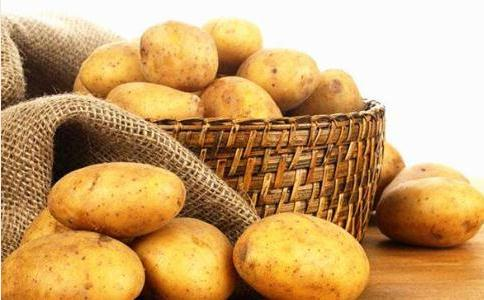

联合国最近一项调查表明，到2100年，全世界人口将增加到105亿，可能导致粮食危机。有的科学家认为，到那个时候，最有可能帮助人类渡过危机的就是这貌不惊人、我们天天见到的土豆。土豆如今成了营养学家青睐的蔬菜明星，被认为是世界上最伟大的食物之一。你知道吃了一辈子的土豆就是最好的“药”吗？到底该如何
土豆浑身是宝，堪称“地下
营养价值高。土豆含有丰富的维生素A和维生素C以及矿物质，优质淀粉含量约为16.5%，还含有大量木质素等。美国饮食营养协会发言人洛娜·桑顿指出，土豆是典型的低能量食物，素有“第二面包”的美称。
含多种维生素，有利心血管健康。土豆富含各种维生素，含量甚至与蔬菜相当。尤其是维生素C和B族维生素含量较高，其中前者是一种抗氧化剂，保护身体免于自由基的威胁，后者有利于心血管健康。
富含钾盐，降脑卒中发病率。每100克土豆含钾高达300毫克以上，具有防治高血压和心脏病的功效，这让土豆享有“地下苹果”的美誉。另外有研究证明，每天坚持吃1个中等大小的土豆（约130克），可使脑卒中的发病率降低40%。
富含多酚类，抗癌、抗氧化。研究结果表明，土豆能有效预防乳腺癌，并在癌症早期的综合治疗中发挥积极作用。土豆中含有的多酚类物质，具有抗癌、抗氧化作用。
是非常好的补气食物。从中医角度看，土豆是一种非常好的补气食物。具有健脾益气、和胃调中、减肥降脂等功效，对有“气虚”表现的人有很好的调理作用。
如何吃土豆防病想要吃土豆达到防治疾病的目的，吃法非常关键。下面为大家推荐几款吃法：
很多人不知道土豆其实还是一味“降压药”。土豆中含有大量矿物质、B族维生素和钾，有利于控压、降压，还可保持血管弹性，有利于预防动脉粥样硬化的发生，这些都是控制血压的可靠保证。
方法：将土豆洗净，去皮，用擦菜板擦成汁或榨成汁。可依照个人口味加入酸奶、砂糖、
高血糖的人可以用土豆代替一部分主食。土豆中的碳水化合物含量在17%左右，比
方法：将土豆蒸熟吃，这种情况能够避免土豆的吸油性，一般需要蒸10分钟左右，然后直接吃就可以。尽可能不要乱加调料，如果觉得难以下咽的话，应该注意细嚼慢咽。
炒酸辣土豆丝可以说是一味治疗食欲差的好“药”，酸辣可口的土豆丝可以增加食欲、促进消食。加醋可以保护土豆中所含的部分维生素C，而炒的过程中放油，又可促进土豆中抗氧化物质的吸收。调成酸辣味，还能减少食盐用量。
方法：将土豆切成丝后，先在水中稍微泡泡。因为土豆中淀粉以直链淀粉为主，泡泡再炒，土豆丝会比较爽脆。
每100克土豆里所含的膳食纤维高达6克，可以说是防治便秘的首选食物。要提醒的是，蜂蜜最好选择
方法：把土豆削皮、切碎，用榨汁机榨成汁；把榨好的土豆汁倒进锅里，用小火煮，当土豆汁变得黏稠时，加入适量蜂蜜，搅拌均匀即可；做完后放入冰箱冷藏。每天喝一次，每次两勺，空腹服用即可。
土豆有很好的呵护肌肤、保养容颜的功效。把土豆切成片敷在脸上，具有美容护肤、减少皱纹的良好效果；贴眼睑上，能减轻眼袋的浮肿。新鲜土豆片液直接涂敷于面部，增白作用十分显著。
晒伤、晒黑后可用土豆汁局部涂抹和消炎镇定；皮肤局部炎症如打针后局部组织肿胀，把土豆切片局部贴敷就可起到消肿的作用；年轻人皮肤油脂分泌旺盛，受青春痘、痤疮困扰，用棉花沾新鲜土豆汁涂抹患处也有一定改善效果。
据国家期刊《现代养生。上半月》，土豆中大量的膳食纤维不仅可以降血糖，还可以帮助降低胆固醇水平和及时排除代谢毒素，常吃土豆能有效降低结肠癌的发病率。
我们首先来看下土豆的营养成分，100g土豆的水分含量很高为79.8%，能量是77kcal，相当于25g粮食的能量。其中脂肪含量为0.2%，还含有丰富的膳食纤维，是一种典型的低脂高膳食纤维的食物。此外，按照淀粉的分类来看，土豆中的淀粉大多为抗性淀粉，在胃肠道的消化速度缓慢，不会引起血糖的大幅波动，可以增加饱腹感，减少进食量。
土豆到底怎么吃才能健康的减肥呢？国家公共二级营养师侯慧敏提出，想让土豆变成减肥食品，首先，要把它当成主食来食用。吃了土豆就要相应地减少米饭、馒头的摄入量。在同样吃饱的情况下，土豆的饱腹感会更强，热量更低，是一种很好的低热量主食。其次，土豆的烹调方式也很关键。一个中等大小的蒸土豆，热量约为90kcal，但是做成炸薯条后，热量就会超过200kcal。采用蒸或煮是土豆健康减肥最正确的方式。
土豆和其他主食相比能量不算高，但是作为蔬菜能量还是很高的。土豆还是一种很容易吸油的食物，只要和富含脂肪的食物搭配，就会大大增加土豆的热量。例如土豆炖牛腩、猪肉粉条炖土豆，这样的土豆吃起来会非常的美味，但是吸收了大量油脂的土豆不但热量很高，而且油脂的香味会让我们不知不觉吃过量。如果我们吃了这样的菜肴之后再吃主食，那这一餐的能量就很容易超标。所以把土豆当蔬菜对于减肥来说不是明智的选择。
最后提醒大家，土豆淀粉含量高，易刺激胃酸分泌，腹胀、胃酸多的患者要少吃，糖尿病患者也不宜多吃。